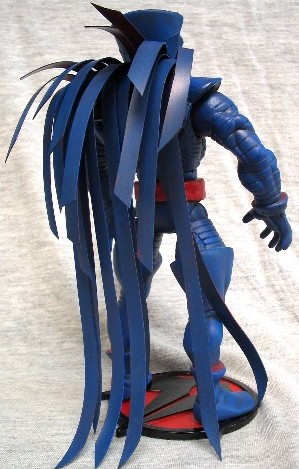
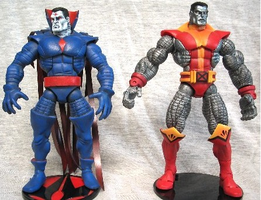

|
A custom of Mr. Sinister, obviously leveraging the ML Colossus figure. However, I used the arms and legs from a Mr. Sinister Projector figure, which are more accurate than the ML version, without a lot of rework. See the picture below to see a comparison shot with ML Colossus. It's a subtle difference, but I think it distinguishes the figure. The cape thing was made from vinyl strips.


|